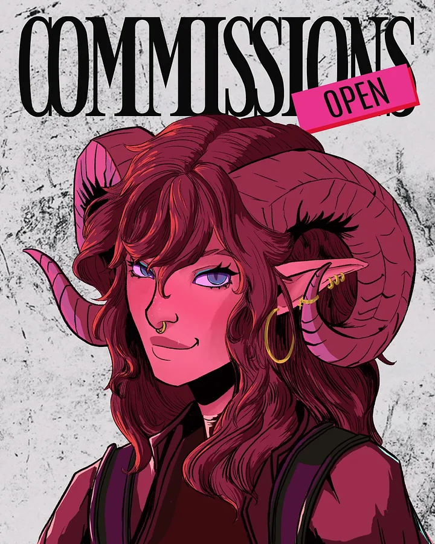
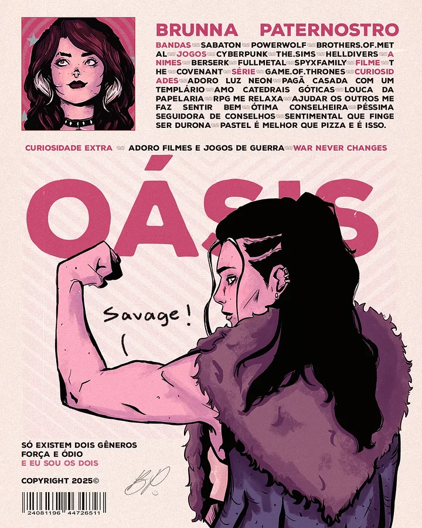
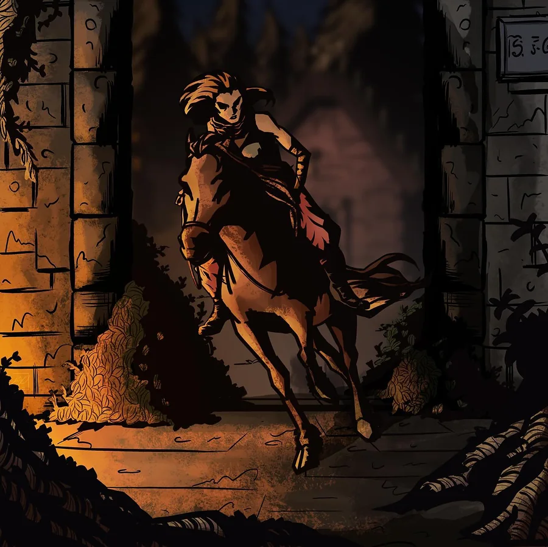

01 os links importantes
Onde fica cada coisa
seu painel (só você e o Wellington)
Acesso do painel (o Wellington cria um definitivo pra você depois)
Usuário: brunna
Senha: brupater
páginas de aviso (aparecem sozinhas quando precisa)
A de página não existe aparece sozinha quando alguém digita um endereço errado. A de erro e a de fora do ar ficam prontas pra quando precisar (por enquanto, quem ativa é o Wellington). Os textos e imagens delas mudam no painel, em Textos e imagens.
02 o que o site tem
O que tem em cada página
O site tem quatro páginas principais (mais a página de cada projeto), cada uma com o seu próprio link. Assim você pode mandar direto o link das encomendas ou da agenda pra quem perguntar.
- InícioNo topo, suas artes em destaque ocupam a tela inteira, sem moldura, e passam pro lado sozinhas, sem parar (no estilo dos destaques da Steam). Tem miniaturas pra escolher, botão de pausa e o botão "ver arte inteira", que abre a arte sem corte. No painel dá pra trocar pra outro jeito: a arte inteira sobre ela mesma desfocada. Seu nome fica menor, no canto superior esquerdo, e a etiqueta da agenda (Commissions open, Esgotado ou Comms closed) aparece ao lado. Logo abaixo vêm os Projetos: só a capa de cada coleção (ilustração e identidade visual); tocando na capa, abre a página do projeto inteiro, como no Behance. Depois vêm os seus links, a ficha da personagem no estilo do pôster Oásis, um interlúdio em tela cheia e três cartões que levam pras outras páginas.
- PortfólioNo topo, a arte com o degradê e a abertura de cinema (veja em "o estilo"). Depois, a galeria com filtros (Pôsteres, Personagens, Ilustrações, Estudos). Tocando numa arte, ela abre em tela cheia e dá pra passar pras próximas.
- AgendaA situação agora (aberta, esgotada ou fechada), a contagem pra próxima abertura, as agendas de cada mês com as vagas em estrelinhas e o carimbo de ESGOTADO, um calendário e a fila de produção.
- EncomendasDuas categorias: Crie sua Ilustração (enquadramento, acabamento, quantos personagens, fundo e quantidade) e Crie sua Identidade Visual (pacotes Básico, Completo e Premium). Mostra o total estimado na hora e manda o pedido pro seu WhatsApp com o resumo escrito. Pra quem prefere o Instagram, tem o botão de copiar o resumo e colar na DM. No fim, as perguntas frequentes.
03 o estilo
Pôster de cinema
O nome do estilo é Pôster de Cinema. Ele foi tirado direto do seu Instagram, que já mistura dois mundos: capas de revista e pôsteres impressos (COMMISSIONS OPEN, Oásis, Character) e ilustrações escuras e dramáticas (a cavaleira saindo do portão, a garota com a água verde). A pedido seu, a base do site ficou clara, no tom de papel da ficha: assim as artes claras e escuras ganham o mesmo destaque.




- Base clara na página inicial: o topo, os projetos e os links usam o tom de papel dos seus pôsteres, então artes claras e escuras ganham o mesmo destaque. O preto continua em alguns pontos (as faixas em tela cheia, os cartões das páginas, o rodapé) e as outras páginas seguem como estavam.
- Interlúdios: cortes em tela cheia com uma arte e uma frase grande, como num filme.
- Claro ou escuro: o site abre no tema claro e tem um botão de sol/lua no topo pra quem visita trocar pro escuro (o visual cinema, todo em tons escuros). A escolha fica guardada no navegador da pessoa. No painel você escolhe o tema inicial e se o botão aparece.
- Abertura de cinema: na primeira visita aparece uma tela de carregamento com seu nome e a barrinha de progresso; quando termina, as faixas escuras se abrem como a tela de um cinema e o topo "assenta". Navegando entre as páginas, só a abertura rápida.
- Topo das outras páginas: no Portfólio, na Agenda e nas Encomendas, o tom do fundo vem da esquerda e sombreia a arte num degradê longo, sem corte reto; as bordas escurecem como lente de câmera, a arte "assenta" saindo de uma luz baixa e o título sobe como letreiro de filme. Tudo acontece uma vez, ao abrir, e depois fica parado.
- Trilha sonora: um mini player no canto esquerdo da tela toca a sua playlist. Use uma playlist do YouTube: toca as músicas inteiras pra todo mundo e repete sem parar. No Spotify, quem não está logado ouve só 30 segundos de cada música. A música só começa quando a pessoa clica (regra dos navegadores), minimizar não para a música, e ela para se a pessoa trocar de página. A música entra e sai devagar (sem susto). Você escolhe no painel o volume inicial, de 1 em 1 (dá pra deixar baixinho, tipo 2 ou 4%), e quem visita aumenta ou diminui no próprio player (no YouTube e no SoundCloud; no Spotify, só pelo volume do aparelho).
- Topo: suas artes em destaque cobrem a tela inteira e passam pro lado sozinhas, sem fim. O botão "ver arte inteira" abre a arte sem corte. Pra ficar perfeito, use artes deitadas (1920 × 1080) e, se quiser, uma versão em pé só pro celular.
04 as fontes
Três vozes de letra
05 as cores
A paleta
As cores foram tiradas das suas próprias artes: o rosa choque da etiqueta OPEN, o rosa do Oásis, o vinho da tiefling, o violeta neon da tabela, o turquesa da água e o papel dos seus pôsteres.
06 como funciona
Os fluxos
Quem visita o site
- ChegaVê sua arte, seu nome e se as encomendas estão abertas.
- ConhecePassa pela ficha e pelo portfólio.
- Confere a agendaVê quando abre, quantas vagas tem e como anda a fila.
- Monta o pedidoEscolhe as opções e vê o preço na hora.
- Manda pra vocêO botão principal abre o seu WhatsApp com o pedido já escrito. Quem prefere o Instagram copia o resumo e cola na sua DM.
Como o preço é calculado
Preço do enquadramento + % de cada personagem extra × acréscimo do acabamento + fundo
Depois disso entram a quantidade, o desconto por quantidade (quando o pedido tem várias artes) e o uso comercial, se a pessoa marcar.
A agenda
Você cria uma agenda pra cada abertura, por exemplo "Agenda de novembro: abre dia 1º, 4 vagas". O site cuida do resto sozinho:
Antes da data: aparece "abre em X dias" e o botão "Me avisa quando abrir".
No dia: abre sozinha e mostra quantas vagas sobram. O botão do pedido vira "Enviar pedido no WhatsApp".
Quando enche: cada vez que alguém pagar os 50%, você marca +1 no painel. Na última vaga, aparece ESGOTADO e o pedido vira lista de espera.
Se precisar parar antes (férias, imprevisto), tem a opção de pausar. As datas de entrega e avisos aparecem no calendário junto com as aberturas, e a fila mostra cada encomenda passando por Esboço, Lineart, Cor, Render e Entregue.
O botão "Me avisa quando abrir" abre o seu WhatsApp com a mensagem já escrita: a pessoa só envia. O site não guarda a lista sozinho; quem avisa é você, pelas mensagens que chegarem.
O painel
- EntraCom o usuário e a senha lá de cima.
- MudaAgenda, preços, artes, textos, cores, fontes.
- ConfereO botão "Prévia" mostra o site com as mudanças antes de salvar, no modo claro ou escuro, no celular ou no computador.
- SalvaUma barra aparece embaixo. Clicou em "Salvar alterações", o site muda na hora.
Por enquanto, o que você salva no painel fica guardado no navegador em que você editou (é pra testar e decidir como quer). Quando o site ganhar o banco de dados, que é a próxima etapa, as mudanças passam a valer pra todo mundo que visitar.
07 a estrutura
Do que o site é feito
index.html início · portfolio.html · agenda.html · encomendas.html · e projeto.html, que mostra cada projetoadmin.html o painel · apresentacao.html esta páginaassets/. As do portfólio ficam em assets/obras/, cada uma em duas versões: uma menor pra grade e uma grande pra tela cheia.08 o que você pode editar sozinha
As abas do painel
Em qualquer campo de imagem tem o botão "Escolher das minhas artes": é só clicar na arte, sem precisar saber o nome do arquivo. E embaixo de cada imagem aparece o tamanho ideal pra aquele lugar.
- Início atalhos pro que você mais usa, a situação da agenda e o +1 vaga num clique
- Agenda e vagas agendas de cada mês (data, vagas e o botão +1 vaga), pausa, textos de cada situação, datas do calendário, fila e etapas
- Preços e pacotes enquadramentos, acabamentos, personagem extra, fundos, descontos, uso comercial, regras de pagamento, os pacotes de identidade visual, a imagem da tabela de comissões e a nota do total estimado
- Minhas artes enviar artes do computador, trocar título e categoria, esconder, reordenar ou apagar; marcar quais passam no topo, a parte da arte que aparece e a versão de celular
- Projetos criar coleções, escolher a capa, a categoria (Ilustração ou Identidade visual), o texto e as imagens de cada projeto
- Textos e imagens o topo de cada página, como as artes aparecem no carrossel, os interlúdios e as páginas de aviso (erro, página não existe, fora do ar)
- Sobre mim e contato nome, título (ex.: Illustrator & Graphic Design), avatar, frase, Instagram, WhatsApp e o botão flutuante, o mini player de música (a sua playlist), e tudo da ficha
- Links adicionar, trocar ícone, esconder ou reordenar
- Perguntas as perguntas e respostas do fim
- Cores e visual cores do modo claro e do modo escuro separadas (fundo, faixas, letras, barra do topo, rodapé), cores da marca, paletas prontas, fontes, tela de carregamento e animações
- Backup baixar uma cópia de tudo, restaurar e voltar à versão original
09 tamanho das imagens
Cada lugar, um formato
Com o tamanho certo, a arte aparece bem enquadrada e nítida. O topo da página inicial e o topo das outras páginas pedem imagens deitadas: uma arte em pé ali sempre perde um pedaço. Essa mesma lista está no painel, na aba Início.
10 pra você conferir
Valores que eu coloquei como ponto de partida
Os preços de busto, meio corpo e corpo inteiro vieram da sua tabela. Os itens abaixo não estavam nela, então eu coloquei um valor inicial. Confira e ajuste no painel do jeito que você cobra:
Os pacotes de identidade visual estão como "sob consulta" até você colocar os preços no painel. Os projetos de ilustração foram montados com as artes que você mandou, com nomes e textos provisórios: troque à vontade. Os de identidade visual entram quando você mandar as imagens deles.